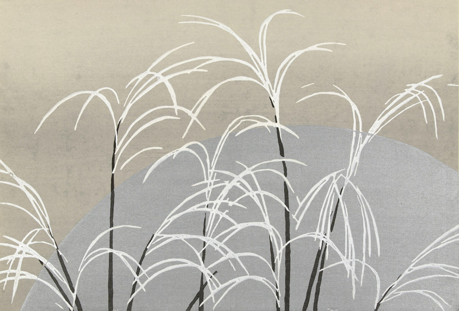

作品名 「尾花に月」
花言葉 「活力」「生命力」
ススキ
「活力」
ススキ(薄、芒)は、夏は緑色で青々とした草原を広げますが、秋になると穂を立ち上げ黄金色に変化し、高原から道端までさまざまな場所でみかけることができます。ススキ(薄、芒)の名前の由来は、すくすくと立っている木から由来して付けられたと言われています。ススキは秋の七草のうちの一つで、穂がなびく姿が秋の風を感じさせたりなど、秋の風物詩として日本文化の中でも親しみのある重要な植物です。
尾花に月
神坂雪佳
神坂 雪佳は、近現代の日本の画家であり、図案家。京都に暮らし、明治から昭和にかけての時期に、絵画と工芸の分野で多岐にわたる活動をした。雪佳の創作活動の大きな特徴は、暮らしを彩るデザインを提供し、空間のトータルコーディネイトをした点にある。実用性の高い図案集の出版から、工芸品の意匠、調度品の装飾、絵画制作に至るまで幅広い仕事をこなし、京都産業界の振興や工芸界の活性化に尽力した。
| 作品名 | 尾花に月 |
| 作者 | 神坂雪佳 |
| 制作年 | 1909年 |
| 寸法 | 43.9cm × 29.9cm |
| 所蔵 | アムステルダム国立美術館所蔵 |